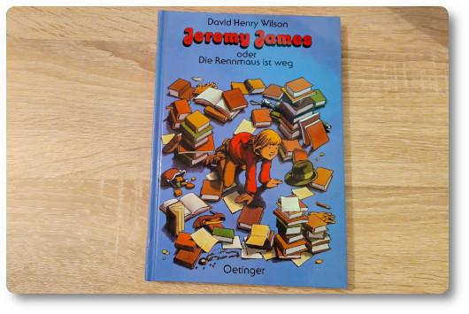

Jeremy James lässt mich ratlos zurück - Rezension
Seit einiger Zeit versuche ich, den Bücherschrank in meinem ehemaligen Kinderzimmer auszuräumen. Dabei ist mir ein Kinderbuch in die Hände gefallen, welches ich im Alter von etwa 10 Jahren geschenkt bekommen habe: "Jeremy James oder Die Rennmaus ist weg".
Das Buch kam 1991 auf den deutschen Markt. Es wurde vom englischen Autor David Henry Wilson, Jahrgang 1937 geschrieben - und es regt mich auf! Schon vor dreißig Jahren konnte ich es nicht leiden. Aber jetzt hab ich es nochmal gelesen und meine Abneigung wurde nur noch größer. Aber nicht gegen den Autor. Sondern gegen den Buchverlag. Und die Buchhandlung in einer mitteldeutschen Kleinstadt, wo man meiner Mutter dieses Buch kurz nach der Wende aufgeschwatzt hat.
Bei Jeremy James handelt es sich um einen Jungen, der in England lebt, und dort ganz alltägliche Geschichten erlebt. Der Erzählstil hat dabei einen zwinkernden Unterton, den ich als unbedarftes Dorfkind nicht verstand. Zum Beispiel war mir fremd, warum die Leute Angst vor einer Maus haben. Oder warum eine Spinne in der Badewanne als üble Bedrohung beschrieben wird. Hä? Sowas juckte mich überhaupt nicht. Und was sollte das für ein Junge sein, der mit einer Spinne ein Problem hat? Seltsam, sehr seltsam.
Der Klappentext preist den Autor für Humor und Witz – ich hingegen fand das Buch rätselhaft und frage mich heute eher, ob es nicht ein Kinderbuch für Erwachsene ist.
Naja. Mir hat sich die Welt in diesem Buch nie wirklich erschlossen. Vielleicht auch, weil ich damals mit den Orten in diesem Buch nichts anfangen konnte und warum die Personen so komische Namen hatten ("Mrs. Small". "Mrs. Smyth-Fortescue", etc.). Und warum sie sich so komisch verhielten. Zum Beispiel war ein Telefon für Jeremys Vater ein "Mist-Ding". Aber für mich war es damals ein Wundergerät, mit dem ich meine 30 Kilometer entfernt wohnende Oma anrufen konnte.
Oder auch hier: Gleich in der ersten Kurzgeschichte geht es um eine Zugfahrt nach Castlebury [*]. Castle-was? Noch nie gehört. Damals und heute nicht. Ist das weit weg? Was für ein Zugticket braucht man wohl dahin? In welchem Teil von Deutschland soll das genau liegen? Ohne einführende Worte war das alles irgendwie komisch... Alles Fragen, die mein neugieriges Ich nicht beantwortet bekam.
Auch die Gedankenwelt des Protagonisten Jeremy James war für mich als Kind nicht nachvollziehbar. Ja, die Gedanken von Kindern können sehr seltsam sein, wenn sie viel Fantasie haben. Aber diese Gedankenwelt war eben nicht meine und ich hab nicht verstanden, warum er manche Dinge so denkt...
Zum Beispiel war es mir total fremd, warum Jeremy James glaubte, dass der Lokführer tot sei, nur weil der Zug, in welchem Jeremy saß, ohne anzuhalten an einem Bahnhof vorbei gefahren ist - und Jeremy daraufhin die Notbremse zieht! Mein Gott - was für ein dämlicher Altersgenosse!!! Später hat sich der Tod des Lockführers in der Geschichte natürlich als falsch herausgestellt. Ich hab mich jedenfalls als Kind für Jeremys Verhalten richtig fremdgeschämt.
Auch die zweite Geschichte entzog sich meinem Verständnis. Denn wie der Zufall es wollte, hat der Vater von Jeremy einen Freund, der Mitarbeiter beim Theater ist. Sein Vater nimmt Jeremy also mit zu diesem Freund im Theater, weil beide etwas Dienstliches zu besprechen hatten. In der Zwischenzeit sollte sich Jeremy im Vorzimmer die Zeit vertreiben. Es kommt wie es kommen muss: Jeremy wird es langweilig und er erkundet das Gebäude. Nach kurzen Umwegen befindet er sich plötzlich auf der Bühne einer laufenden Theatervorstellung wieder, bei der gerade die berühmten Sätze "Sein oder nicht sein!" fallen! Ja, es war eine Shakespeare-Vorstellung. Mein 10-jähriges ich hat hier gar nichts begriffen - ich wusste nicht, was "sein oder nicht sein" bedeutet, ich hatte ja keine Ahnung von Shakespeare und die Welt des Theaters war für mich auch noch sehr fremd. Im Buch aber flippten gerade alle Leute aus. Hab ich irgendwas verpasst? 🫤
Nein, nein, nein. So ein Buch hätte man vielleicht erst einmal Kindern ab 10 Jahren zum Probelesen geben sollen, bevor man es in den Verkauf gibt, dazu noch in einer mitteldeutschen Buchhandlung kurz nach der Wende. Zu diesen Geschichten hier hatte ich keinen Bezug und hätte statt dessen lieber Geschichten gelesen, die mir vertrauter erschienen oder bei denen es wirklich was zu lachen gab. 😜